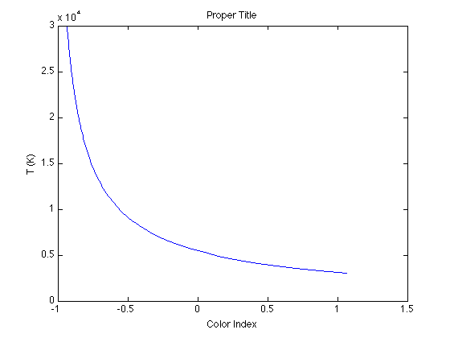

The Main Sequence
This is the reference that you can use to check your work. Some parts of the code are blocked (using ...) for you to figure out yourself.
You should have a vector of 100 different values of temperature between 3000K and 30000K:
temp = linspace( ... );
Consider two astronomical filters, B (4360 Angstroms) and V (5450 Angstroms). Don't forget to transfer the wavelengths from Angstroms to meters:
lamB = 4360* ... ; lamV = 5450* ... ;
The intensities in B and V bands are:
IB = planck(lamB,temp); IV = planck( ... );
The TOTAL intensities in B and V bands are:
ItotB = IB*940* ... ; ItotV = IV* ... ;
The color index is roughly
BminusV = 2.5*log10( ... );
A HR diagram can be made by plotting luminosity vs. color index. Since the luminosity scales as log(I), we can use the intensity in V band to calculate a scale-free relative measure of luminosity:
Lv = log10(ItotV);
If you did everything properly, your data points should look like the main sequence of the HR diagram.
figure(1); clf plot( ... ) ...('B-V'); ...('Some kind of Luminosity') ...('Main Sequence?')

Note: the color index scales with reverse of temperature, i.e. BminusV 1/temp. You can try to plot it out to see this behavior:
figure(2); clf; plot(BminusV, temp) ...
Keep this in mind and look at your theoretical HR diagram again. Which end of the x-coordinate represents stars with higher surface temperature?